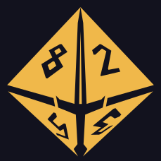

Exporta tu personaje desde Fight Club 5e: Personaje → ··· → Exportar XML luego comparte o selecciona el archivo aquí.
Personaje → ··· → Exportar XML
En Android, si instalaste esta PWA, FC5e puedecompartir el XML directamente aquí.